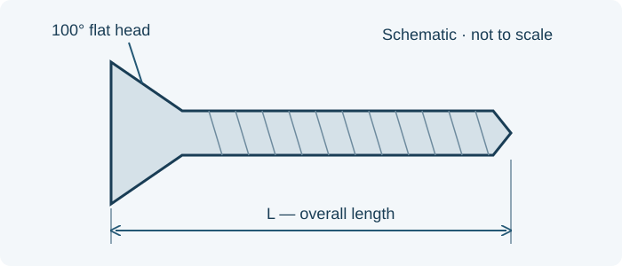

// TECHNICAL RESOURCES
MS24693 100-degree flat-head machine screws.
Find selected stocked MS24693 steel and corrosion-resistant steel screws, compare nominal threads and lengths, and request a quote from Webson.
// DIMENSIONS & PART IDENTIFICATION
Countersunk-screw length and head angle

Schematic only; not to scale. Letter labels are keys for this illustration. Use the applicable part specification for dimensions, tolerances and measurement conventions.
// PART IDENTIFICATION
A 100-degree countersunk head
MS24693 identifies cross-recessed, 100-degree flat-head machine screws. Selected entries include UNC-2A and UNF-2A threads. Confirm the head angle and thread together with the material and finish.
// STOCKED SELECTION
Stocked MS24693 part numbers
Selected stocked configurations are listed below. Dimensions are nominal identification references in inches; use the controlling specification and drawing for full tolerances and acceptance requirements.
No matching entries. Clear the filters or try a shorter search.
| Part number | Thread | Nominal length (in) | Configuration | Stock status | Request pricing |
|---|---|---|---|---|---|
| MS24693S3 | 4-40 UNC-2A | 5/16 | Cadmium-plated steel | Stocked item | Quote MS24693S3 → |
| MS24693C38 | 6-32 UNC-2A | 1-3/4 | Passivated CRES | Stocked item | Quote MS24693C38 → |
| MS24693C3 | 4-40 UNC-2A | 5/16 | Passivated CRES | Stocked item | Quote MS24693C3 → |
| MS24693C40 | 6-32 UNC-2A | 2 | Passivated CRES | Stocked item | Quote MS24693C40 → |
| MS24693S4 | 4-40 UNC-2A | 3/8 | Cadmium-plated steel | Stocked item | Quote MS24693S4 → |
| MS24693C2NP | 4-40 UNC-2A | 1/4 | Passivated CRES; patch per drawing | Stocked item | Quote MS24693C2NP → |
| MS24693S2 | 4-40 UNC-2A | 1/4 | Cadmium-plated steel | Stocked item | Quote MS24693S2 → |
| MS24693S49 | 8-32 UNC-2A | 7/16 | Cadmium-plated steel | Stocked item | Quote MS24693S49 → |
| MS24693C422 | 0-80 UNF-2A | 5/16 | Passivated CRES | Stocked item | Quote MS24693C422 → |
| MS24693C1 | 4-40 UNC-2A | 3/16 | Passivated CRES | Stocked item | Quote MS24693C1 → |
| MS24693C23 | 6-32 UNC-2A | 3/16 | Passivated CRES | Stocked item | Quote MS24693C23 → |
| MS24693C2 | 4-40 UNC-2A | 1/4 | Passivated CRES | Stocked item | Quote MS24693C2 → |
| MS24693C8 | 4-40 UNC-2A | 3/4 | Passivated CRES | Stocked item | Quote MS24693C8 → |
| MS24693S24 | 6-32 UNC-2A | 1/4 | Cadmium-plated steel | Stocked item | Quote MS24693S24 → |
| MS24693C17NP | 4-40 UNC-2A | 1-7/8 | Passivated CRES; patch per drawing | Stocked item | Quote MS24693C17NP → |
| MS24693C25 | 6-32 UNC-2A | 5/16 | Passivated CRES | Stocked item | Quote MS24693C25 → |
| MS24693C1NP | 4-40 UNC-2A | 3/16 | Passivated CRES; patch per drawing | Stocked item | Quote MS24693C1NP → |
| MS24693S6 | 4-40 UNC-2A | 1/2 | Cadmium-plated steel | Stocked item | Quote MS24693S6 → |
| MS24693S1 | 4-40 UNC-2A | 3/16 | Cadmium-plated steel | Stocked item | Quote MS24693S1 → |
| MS24693C218 | 0-80 UNF-2A | 1/8 | Passivated CRES | Stocked item | Quote MS24693C218 → |
| MS24693S7 | 4-40 UNC-2A | 5/8 | Cadmium-plated steel | Stocked item | Quote MS24693S7 → |
| MS24693C217 | 0-80 UNF-2A | 3/32 | Passivated CRES | Stocked item | Quote MS24693C217 → |
| MS24693S272 | 10-32 UNF-2A | 1/2 | Cadmium-plated steel | Stocked item | Quote MS24693S272 → |
| MS24693S25 | 6-32 UNC-2A | 5/16 | Cadmium-plated steel | Stocked item | Quote MS24693S25 → |
| MS24693C24 | 6-32 UNC-2A | 1/4 | Passivated CRES | Stocked item | Quote MS24693C24 → |
| MS24693C35 | 6-32 UNC-2A | 1-3/8 | Passivated CRES | Stocked item | Quote MS24693C35 → |
| MS24693C30 | 6-32 UNC-2A | 3/4 | Passivated CRES | Stocked item | Quote MS24693C30 → |
Stocked items are subject to prior sale. Request a quote to confirm current availability and lead time.
Rows marked patched identify a stocked modified configuration. Dimensions describe the base screw; confirm the patch specification and drawing before ordering.
// LENGTH CONVENTION
Overall length includes the head
For this flat-head family, nominal screw length includes the countersunk head. This differs from the under-head length convention used for MS35206 pan-head screws.
MS24693C3 identifies a 4-40 by 5/16-inch selection. MS24693C218 identifies a 0-80 by 1/8-inch selection. Use the specific size reference rather than carrying dash-number rules across screw families.
// MATERIAL AND FINISH
Retain material and modification details
In the selected legacy references, C identifies passivated corrosion-resistant steel and S identifies cadmium-plated steel. Patched entries require the additional patch specification or drawing.
The NP ending is retained for the stocked modified configuration; it is not presented as a universal suffix defined by MS24693. Confirm all modification requirements before ordering.
// SOURCE WITH WEBSON
Prepare the complete requirement
Send the full designation, quantity, required delivery date and controlling drawing or standard issue. Include patch details, approved-source restrictions and required certificates.
// BUYER CHECKLIST
Prepare the requirement for quotation
- Complete designation, including all material, finish and locking suffixes.
- Quantity, required delivery date and controlling drawing or specification issue.
- Required certificates, source restrictions and lot traceability.
// SOURCE WITH WEBSON
Have a part number or bill of material?
Send the complete designation, quantity, required delivery date and documentation requirements. Webson will review your requirement for quotation.